Tech Workshop for Nonprofits

Goals for Today
- Learn to think through how your needs could be solved with software
- Learn to frame your needs for developers and understand budgeting and workflows
- Workshop prototyping your needs as software
Who are we?
Jessica and Laura
Agenda
- Software lifecycle overview
- How to identify your minimum viable product
- How to use your resources efficiently
- Software development roles and how to identify which ones you really need
- Workshop wire framing of projects
What are we trying to avoid?
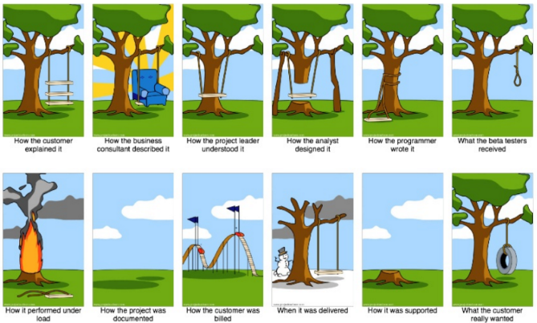Important Vocabulary
When I say “software product” I mean…
One or more pieces of software code that meet a need - or want - someone has.
MVP
The minimum viable product: the product that effects the fewest number of functions that meet a core product goal.
MVP

MVP
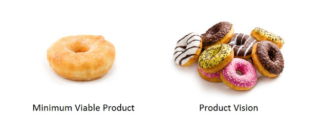Iterating
Take one step at a time. Build one function at a time. Succeed with that function before moving to the next. Build tools that rely upon one another in a logical order.
A software product is “feasible” when…
It is economical: it costs less than it earns.
It is operational: it serves its intended purpose.
It technically works: it doesn’t crash!
Backlog
The “to do” list of your software development needs.
Metrics
A metric is a standard of measurement. Software metrics are the statistics describing the structure or contact of a program. A metric should be a real objective measurement of something such as the number of bugs per lines of code.
“ROI” (Return on Investment)
Given two features that have EQUAL value to the customer, you would first build the one that took less work.
Frontend and Backend
In software engineering, the terms "front end" and "back end" are distinctions which refer to the separation of concerns between a presentation layer and a data access layer respectively.
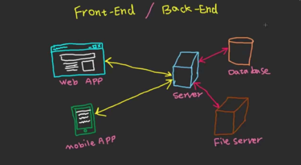The Software Development Lifecycle (SDLC)
Software Development Life Cycle (SDLC), in systems engineering and software engineering refers to the process of creating or altering systems, and the models and methodologies that people use to develop these systems.
Big Picture
SDLC should result in a high quality system that:
- meets or exceeds customer expectations
- reaches completion within time and cost estimates
- works effectively and efficiently in the current and planned IT infrastructure
- is inexpensive to maintain and cost- effective to enhance
Big Picture
SDLC Broken Down
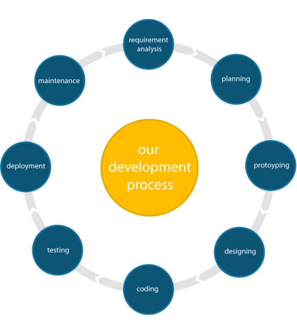What are requirements?
- MARKETING REQUIREMENTS: what you want to sell, and to who. Users?
- PRODUCT REQUIREMENTS: operations your product needs to complete. MVP!
- SYSTEM REQUIREMENTS: external resources your product needs to run. Mobile? App store? Web app?
Why are requirements important?

Write your own requirements
Questions:
- What’s the goal? What problem(s) will it solve?
- What functions should it have?
- Who will use it?
- When will it be useful?
- What information or data sets does it rely on?
- What pieces already exist?
- What costs will be incurred to build it?
Why might requirements change?
Technology Research
How to search for what is out there.
What are people already using?
Focus groups and surveys
UX Design and Prototyping
- User Personas
- Sitemaps
- User Flows
- Wireframes
Flow Chart Types
Macro Flow
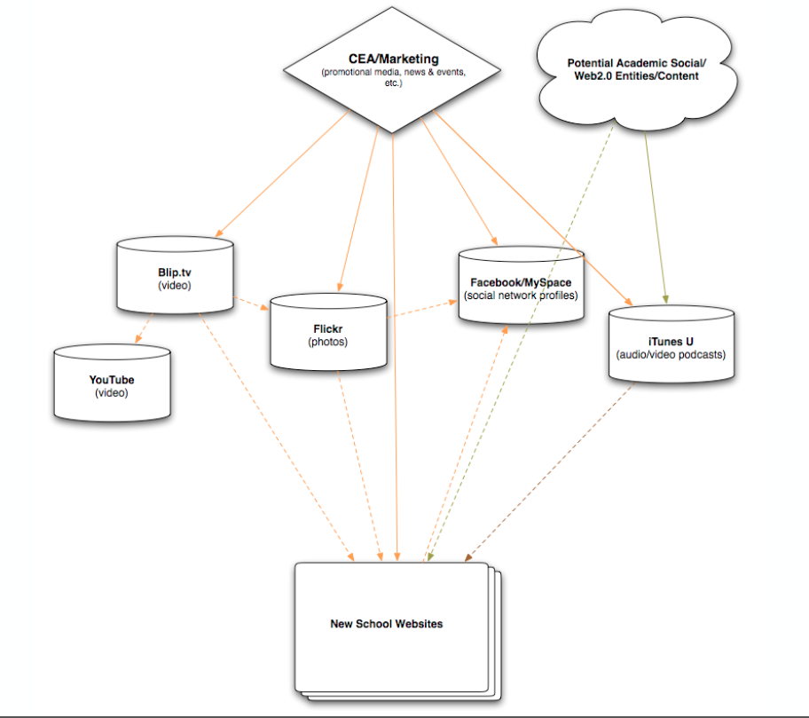High level, main structure
User Flow
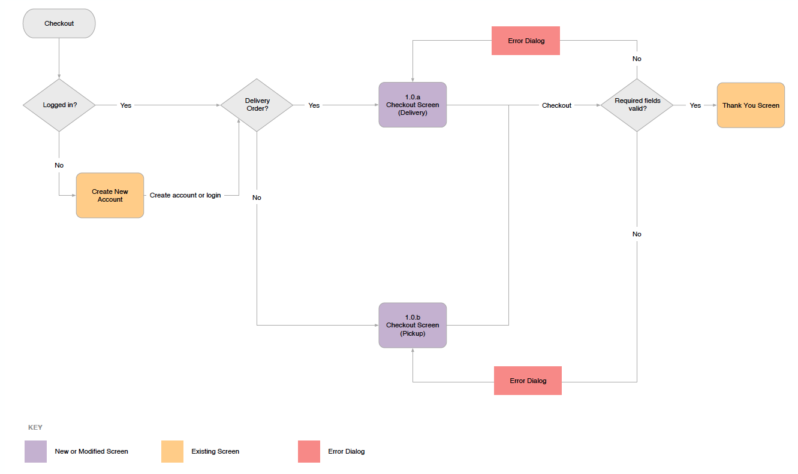User Flow
Describes a typical experience to use an app or website to complete a task.
Flow Chart Basic Elements

- Areas
- Line Weight
- Shading
- Color
Examples!
Don't do this
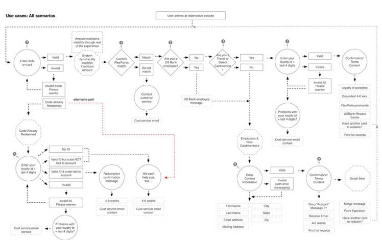- Break flows into small usecases and don't make it too complicated
A Good Example
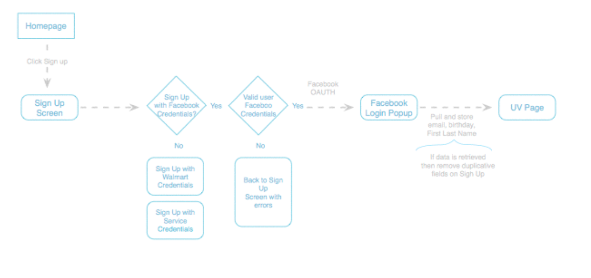Forget Your Passwords Flow
- Go to an online service like Gmail, Twitter or Yahoo
- Note all of the interactions in the “Forget your Password” flow.
- You should account for interactions in the flow. Error messages, success messages, password reset and confirmation, etc.
App/Site Map
The site map is a list of all main topic areas of the site, as well as sub-topics, if applicable. This serves as a guide as to what content will be on the site, and is essential to developing a consistent, easy to understand navigational system.
App/Site Map
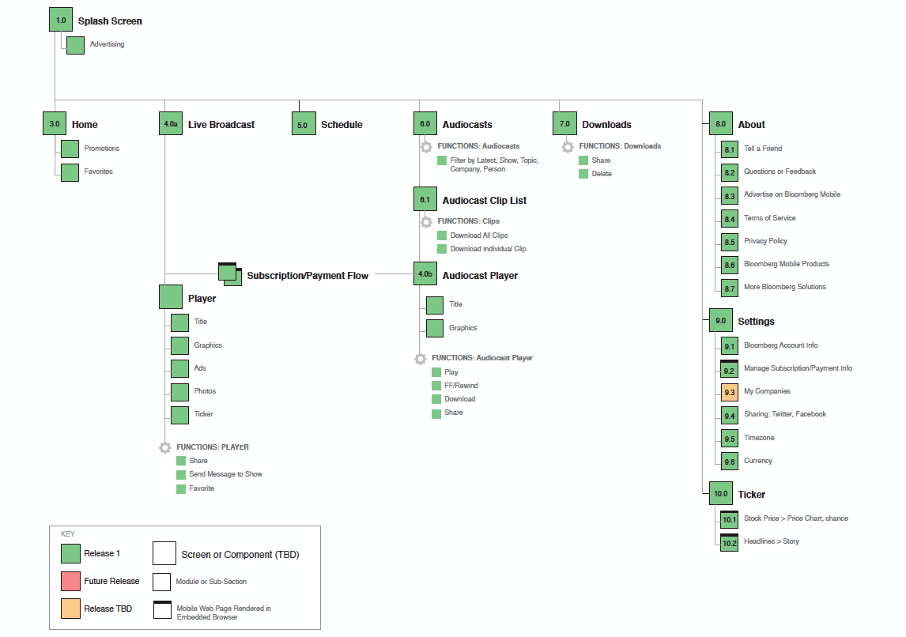App/Site Map
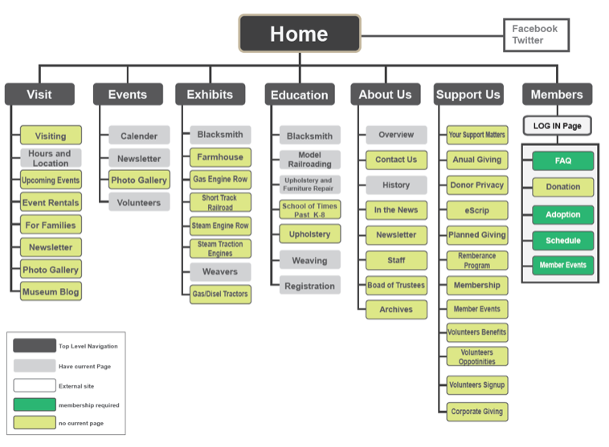Design/Prototyping/Wireframes
- Drawing from the information gathered up to this point, it’s time to determine the look and feel of your site.
- Target audience is one of the key factors taken into consideration. It is also important to leave your own creative mark.
- Wireframes are created for the purpose of arranging elements to best accomplish a particular purpose. The wireframe depicts the page layout or arrangement of the website’s content, including interface elements and navigational systems, and how they work together.
- Try it out: https://gomockingbird.com/home
Wireframes
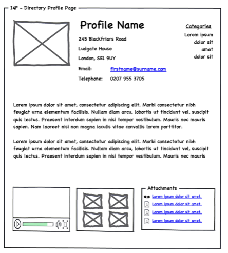Visual Design
- Mood boards
- Color palettes
- Images
- Fonts
Communication!
Where to find (free) stock images
Coding!
Timeframes
- Static Websites
- Dynamic Websites
- Mobile Apps
Budgeting
- Static Websites
- Dynamic Websites
- Mobile Apps
Domains and Hosting
- Where to find domains
- Domain name: Pros and Cons
- Where to host
- Self maintained hosting: Pros and Cons
Code-free website editing
Content Management Systems
Pros and Cons
Remember
Always leave time between testing and the planned launch date. Why?
- Developers need time to fix bugs.
- Once things are fixed, they need to be tested again.
- The last thing you test could be the biggest problem.
- Client review.
Review: Who makes up a tech company?
aka: Who should I be talking to?

Wireframe Workshop
THE END
Thank you for your attention!